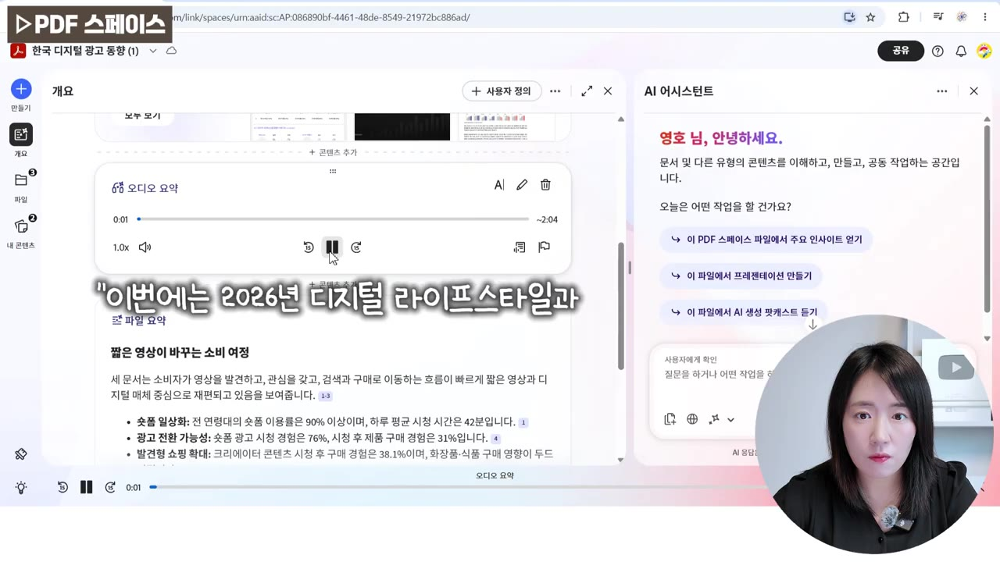
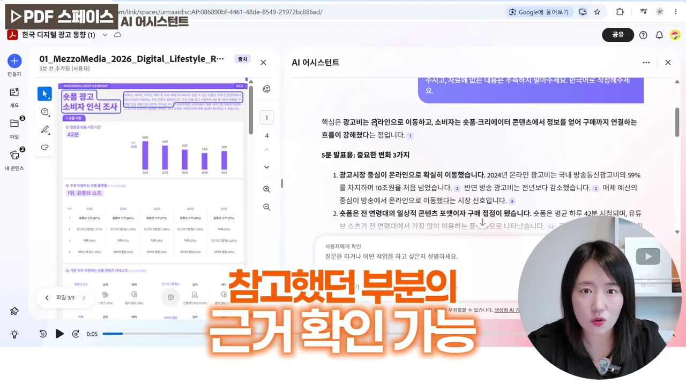
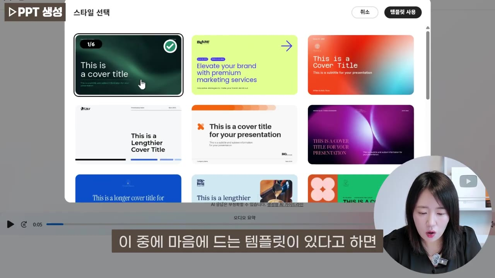
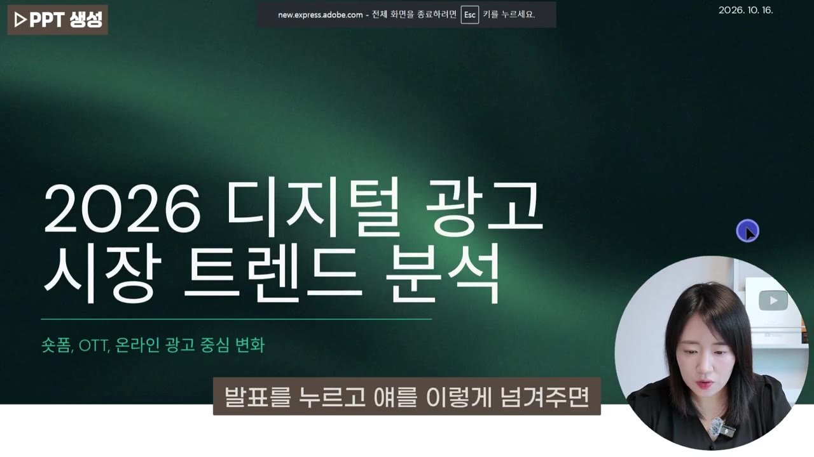
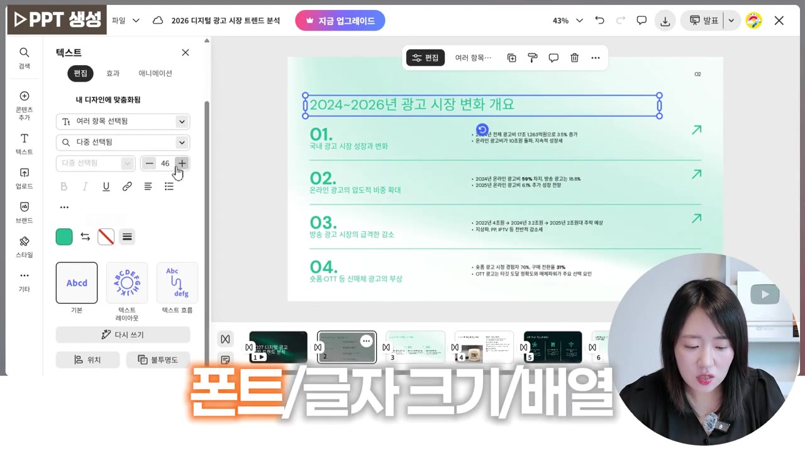
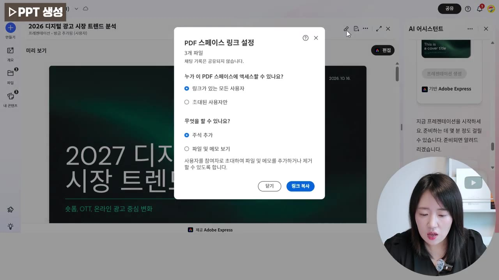
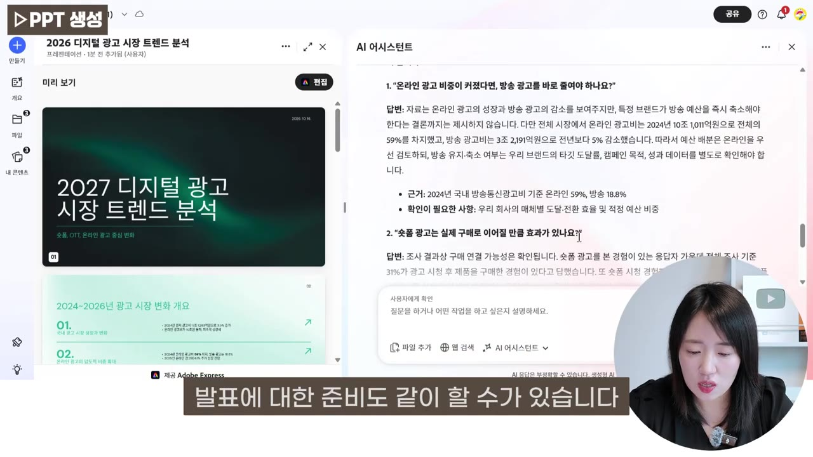

PPT 만들어주는 AI! 자료 분석부터 발표자료 제작까지 한 번에 (Adobe Acrobat AI)
▶ 원본 영상 보기한눈에 보기
- Adobe Acrobat의 PDF 스페이스에 PDF·워드·PPT·이미지·웹 링크·텍스트를 최대 100개까지 넣으면, AI가 자동으로 읽고 요약해 줍니다. 오디오 요약도 함께 만들어 줍니다.
- 오른쪽 AI 어시스턴트에 "발표 목적·청중·시간"을 알려 주면 핵심 변화와 쓸 만한 수치를 정리해 줍니다. 답변 속 번호를 누르면 원문의 근거 위치가 형광펜처럼 표시됩니다.
- "프레젠테이션을 생성해 줘"라고 입력하고 대상자·톤·길이·템플릿을 고르면 슬라이드 초안이 나옵니다. 영상에서는 9장이 나왔고, PPTX·PDF·JPG·PNG로 내려받을 수 있습니다.
- 만든 슬라이드는 글자·숫자를 바로 고칠 수 있습니다. 배경 제거, 색상·폰트, 애니메이션, AI로 다듬기, 미디어 추가 같은 세부 편집도 됩니다.
- 회의에서 나올 만한 질문과 답변도 출처와 함께 받아 볼 수 있습니다. 작업 공간은 링크로 팀원과 공유합니다.
이런 분께 도움이 됩니다
- 갑자기 받은 긴 보고서를 "5분 브리핑"해야 하는 직장인
- PDF 자료를 많이 다루고, 발표 근거를 원문 페이지로 대야 하는 사람
- 여러 자료를 한꺼번에 분석해야 하는 학생이나 논문 준비생
핵심 내용
왜 PDF 스페이스인가 (0:24)
보고서를 꼼꼼히 읽고 요약할 시간 없이 브리핑을 요청받는 상황을 해결하려는 기능입니다. 평소 쓰던 Acrobat 안에서 분석부터 PPT 제작까지 끝냅니다.
💡 다른 AI 도구를 따로 열지 않고 PDF 작업 공간 안에서 자료 분석 → 발표자료 → 예상 질문까지 이어진다.
자료 넣기: 형식 상관없이 최대 100개 (1:35)
- 넣을 수 있는 것: 장치(PDF, 워드, PPT, 텍스트, 이미지 파일), 최근 파일, 웹 링크, 텍스트 붙여넣기
- 확장자와 관계없이 최대 100개까지 넣을 수 있습니다.
- 영상에서는 보고서 파일 2개와 기사 링크 1개를 넣었습니다.
자동 분석·요약·오디오 요약 (3:05)
파일을 넣기만 해도 따로 시키지 않은 종합 분석이 시작됩니다.
- 왼쪽 위: 자료 전체 요약. 영상 예시의 제목은 "한국 디지털 광고 동향과 2024년 온라인 방송 광고비 분석"입니다.
- 왼쪽 아래: 첨부한 파일 목록. 여기서 파일을 삭제하거나 추가할 수 있습니다.
- 오디오 요약: 누르면 자료 내용을 음성으로 요약해 들려줍니다. 예: "이번에는 2026년 디지털 라이프스타일과 미디어 이용 현황을 살펴봅니다."
- 오른쪽: 함께 작업하는 AI 어시스턴트 창

발표 내용부터 정리하고, 근거는 원문으로 확인 (4:38)
PPT를 만들기 전에 무엇을 말할지 먼저 정리하는 것이 핵심이라고 강조합니다.
- 요청에 목적(팀 회의), 시간(5분), 원하는 결과(중요한 변화 3가지 + 수치 2개)를 넣었습니다.
- 결과: "광고비는 온라인으로 이동…" 같은 변화 3가지와 발표용 핵심 수치가 정리되어 나왔습니다.
- 답변 속 숫자(인용 번호)를 누르면 원문에서 그 내용이 있는 부분이 형광펜처럼 표시됩니다.
💡 200여 쪽을 다 읽지 않아도 "근거가 뭐냐"는 질문에 "몇 페이지 어디"라고 답할 수 있다.

프레젠테이션 생성 (6:56)
두 가지 방법 중 하나로 시작합니다.
- 어시스턴트 창에 "방금 분석한 내용을 기반으로 프레젠테이션을 생성해 줘" 입력
- 또는 왼쪽 만들기 → 프레젠테이션 클릭
AI가 대상자·톤·길이를 물어보고 템플릿 예시를 보여 줍니다. 전체를 누르면 템플릿이 더 많이 나옵니다. 비즈니스용 템플릿이 많아 업무에 바로 쓸 만합니다. 짧은 PPT일수록 빨리 만들어집니다.

결과물 확인·다운로드·편집 (8:28)
- 만들어진 슬라이드는 9장이었고, 이미지와 글자 배치가 적절히 들어갔습니다.
- 발표를 누르면 실제 발표하듯 넘겨 볼 수 있습니다.

- 오른쪽 위 다운로드에서 JPG, PNG, PPTX, PDF로 받을 수 있습니다.
- 간단한 수정: 글자를 바로 고칠 수 있습니다. 예: 연도를 2027년으로 바꾸기, 이름 지우기.
- 세부 편집(편집 클릭): 배경 제거, 효과, 색상, 애니메이션, 폰트·글자 크기·배열, 배경·아이콘 교체

- AI로 다듬기: 페이지 일부나 전체 디자인을 바꿉니다.
- 왼쪽 콘텐츠 추가: 사진·비디오 같은 미디어나 요소를 넣습니다. 페이지에서 슬라이드를 추가합니다.
💡 통이미지가 아니라 요소마다 편집할 수 있는 초안이라, 받아서 바로 고쳐 쓸 수 있다.
저장·공유 (11:12)
- 오른쪽 위 X로 나갑니다. 작업 중에는 댓글로 피드백을 남길 수 있습니다.
- 결과 PDF는 내 컴퓨터 또는 내 콘텐츠에 저장합니다. 내 콘텐츠는 지금까지 만든 자료를 모아 두는 곳입니다.
- PDF 스페이스의 작업 과정 자체를 공유할 수 있습니다. 접근 권한을 링크가 있는 모든 사용자 또는 초대된 사용자만으로 정하고 링크 복사를 누르면 됩니다. 공유받은 사람은 파일·메모·주석을 보고 함께 작업할 수 있습니다.

예상 질문과 답변 준비 (12:39)
"팀 회의에서 나올 만한 질문 3개와 답변"을 요청하면 답변마다 출처가 붙어 나옵니다. 정확한 근거가 꼭 필요하면 "근거가 없는 내용은 확인이 필요하다고 표시해 주세요"라고 덧붙이면 됩니다. 영상에 따르면 보통은 근거가 있는 내용만 나옵니다.

따라 해보기
준비물
- Adobe 계정과 로그인 (영상은 로그인한 상태로 시작)
- 발표에 쓸 자료: PDF·워드·PPT·이미지·웹 링크 등, 최대 100개
- 소요 시간: 영상 기준으로 분석부터 PPT 생성까지 수 분
- 비용·요금제: 영상에 나오지 않음
단계별 방법
- 1PDF 스페이스 열기
Adobe 사이트에 로그인한 뒤 "AI 기반의 PDF 스페이스"에서 스페이스 사용하기를 누릅니다. (1:12)
- 2새 스페이스 만들기
오른쪽 위 만들기 → 새 PDF 스페이스 만들기를 누릅니다. (1:35)
- 3자료 넣기
왼쪽 장치에서 파일 선택이나 끌어다 놓기로 넣습니다. 링크는 웹 링크, 텍스트는 붙여넣은 뒤 각각 추가를 누릅니다. 마지막으로 PDF 스페이스에 추가를 누릅니다. (2:21)
- 자동으로 요약과 오디오 요약이 만들어집니다.
- 4발표 내용 정리 요청
오른쪽 AI 어시스턴트에 목적·청중·시간·원하는 결과를 넣어 요청합니다. (4:38)
- 5근거 확인
답변의 인용 번호를 눌러 원문에서 표시된 부분을 확인합니다. (5:45)
- 6프레젠테이션 생성
생성을 요청하거나 왼쪽 만들기 → 프레젠테이션을 누릅니다. (6:56)
- 7옵션 선택
대상자(예: 내부 팀)·톤·길이를 고르고, 전체에서 템플릿을 고른 뒤 프레젠테이션 생성을 누릅니다. (7:42)
- 8검토·수정
발표로 전체를 넘겨 보고, 글자를 고치거나 편집·AI로 다듬기로 세부를 손봅니다. (8:49)
- 9다운로드·저장
오른쪽 위 다운로드에서 PPTX 등을 받고, X로 나간 뒤 내 콘텐츠에 저장을 누릅니다. (9:24)
- 10예상 질문 준비
회의에서 나올 질문과 답변을 출처와 함께 요청합니다. (12:39)
4단계에 입력할 내용 (영상 예시)
이 PDF 스페이스의 보고서 두 개와 기사를 바탕으로 팀 회의에서 디지털 광고와 소비자 트렌드를 5분 동안 소개하려고 해요. 중요한 변화 세 가지와 발표에 사용할 수치 두 개를 정리해 주세요.
6단계에 입력할 내용
방금 분석한 내용을 기반으로 프레젠테이션을 생성해 줘
10단계에 입력할 내용 (근거 표시는 선택)
이 PDF 스페이스의 자료를 바탕으로 팀 회의에서 나올 만한 질문 세 개와 답변을 정리해 주세요. 근거가 없는 내용은 확인이 필요하다고 표시해 주세요.
따라 할 수 있는지 점검
- ✅ 바로 따라 할 수 있음: 2~10단계의 메뉴 이름과 입력 문장은 영상에 나옵니다.
- ⚠️ 1단계 「PDF 스페이스 열기」: Adobe 사이트 주소와 진입 경로가 자막에 나오지 않습니다. → 영상 설명란 링크(https://adobe.ly/3WDZDRB)로 들어가거나, 영상 1:12 화면을 확인하세요.
- ⚠️ 전체 「요금제」: 무료로 되는지, Acrobat AI 어시스턴트 유료 구독이 필요한지 영상에 나오지 않습니다. → 링크로 들어간 Adobe 공식 페이지에서 "AI Assistant" 요금을 확인하세요. 유료일 수 있습니다(보충).
- ⚠️ 7단계 「옵션 선택」: 톤·길이에서 고를 수 있는 항목과 각 항목이 몇 장으로 이어지는지 나오지 않습니다(영상 결과는 9장). → 영상 7:59 화면을 보거나 직접 선택지를 확인하세요.
- ❓ 영상 설명란에는 슬라이드 수정을 "Adobe Express에서" 한다고 되어 있지만, 자막에는 편집 화면의 도구 이름이 나오지 않습니다. 편집 화면이 별도 서비스로 열리는지 직접 확인해 보세요.
- ❓ 자막의 "웹크"는 자동 생성 자막의 오인식으로 보이며, 웹 링크 메뉴로 추정됩니다.
확인 방법
- 3단계 뒤 왼쪽에 자료 요약과 오디오 요약 버튼이 나오면 분석이 끝난 것입니다.
- 5단계에서 번호를 눌렀을 때 원문 페이지에 표시가 뜨는지 확인하세요.
- 7단계 뒤 왼쪽에 고른 템플릿 디자인의 결과물이 나오고, 발표로 넘겨 볼 수 있으면 성공입니다.
막히면
- 결과가 기대와 다르면 요청 문장에 목적·청중·시간·원하는 결과 수를 더 구체적으로 적으세요.
- 생성된 수치는 반드시 인용 번호로 원문과 대조하세요(설명란 권고).
- 긴 PPT는 만드는 데 시간이 더 걸립니다.
기억할 숫자·인용
- 한 PDF 스페이스에 넣을 수 있는 파일: 최대 100개 (확장자 무관)
- 영상 예시 자료: 보고서 2개 + 기사 링크 1개 → 슬라이드 9장
- 다운로드 형식: JPG, PNG, PPTX, PDF
- "중요한 건 PPT를 제작하는 게 아니라 그 안의 내용"
생각해볼 점
- (영상 내용) 근거 표시가 강점이라고 하지만, 인용 번호는 "어디를 참고했는지"만 보여 줍니다. (내 의견) 해석이 맞는지는 결국 사람이 원문을 읽고 판단해야 합니다.
- (내 의견) 이 영상은 Adobe 링크가 붙은 소개 영상에 가깝습니다. 요금, 한국어 슬라이드 품질, 회사 보안 정책상 자료를 업로드해도 되는지는 따로 확인하세요.
- (내 의견) 템플릿 기반 초안이라 디자인이 비슷해질 수 있습니다. 회사 양식이 있다면 PPTX로 받은 뒤 옮겨 붙이는 수고가 남습니다.
바로 해볼 일
- 최근 받은 보고서 PDF 1~2개로 PDF 스페이스를 만들고 오디오 요약을 들어 보기
- 위의 "5분 발표용 변화 3가지 + 수치 2개" 문장을 내 주제로 바꿔 요청하고, 인용 번호로 수치를 원문과 대조하기
- 다음 회의 전에 "예상 질문 3개와 답변(근거 없으면 표시)"을 받아 보기